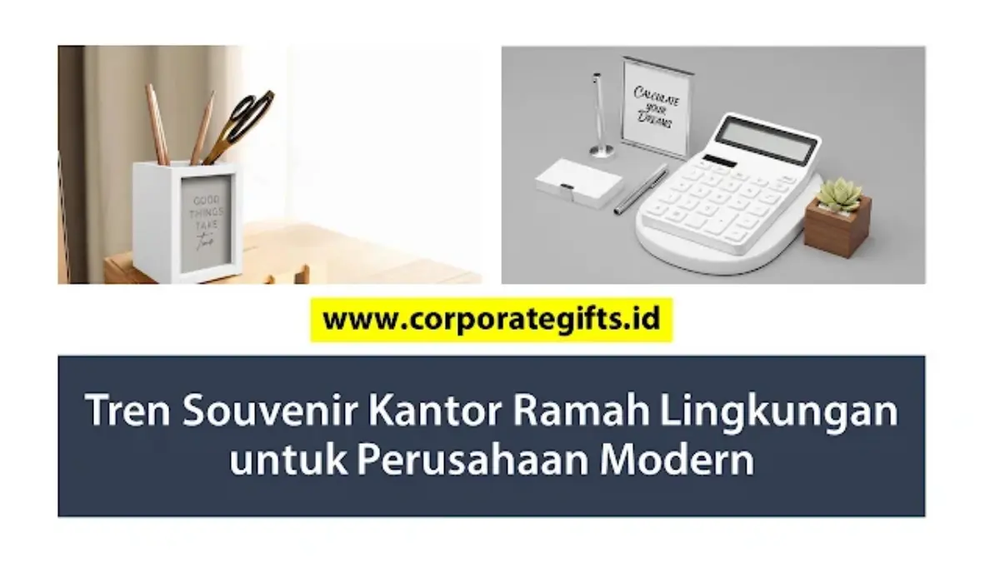

Corporate Gifts ID - Souvenir kantor ramah lingkungan adalah merchandise perusahaan berbahan daur ulang, organik, atau hemat energi seperti totebag kanvas daur ulang, tumbler stainless, alat tulis bambu, dan cutlery set ramah lingkungan. Perusahaan modern kini semakin sadar akan pentingnya prinsip keberlanjutan (sustainability), di mana salah satu wujud nyata penerapannya adalah beralih ke souvenir kantor ramah lingkungan. Produk eco-friendly ini tidak hanya mendukung program Corporate Social Responsibility (CSR) dan mereduksi jejak karbon, melainkan juga membangun citra merek yang visioner di hadapan klien, karyawan, maupun mitra bisnis global. Artikel ini merangkum tren terkini, inspirasi produk terbaik, hingga panduan memilih souvenir eco-friendly yang tepat untuk institusi Anda.
Poin Kunci Souvenir Kantor Ramah Lingkungan:
- Bahan Alami & Daur Ulang: Memanfaatkan serat rami, kayu bambu, stainless steel food grade, atau plastik daur ulang (rPET).
- Penguatan Green Branding: Menunjukkan komitmen nyata korporasi terhadap Sustainable Development Goals (SDGs) dan kelestarian alam.
- Zero Waste & Fungsional: Mengurangi sampah plastik sekali pakai lewat produk kantor yang tahan lama dan reusable.
- Kemasan Kraft Minimalis: Menggunakan kotak kardus daur ulang tanpa lapisan laminasi plastik berlebih.
- Custom Branding Eco-Friendly: Sablon berbahan dasar air (water-based) atau grafir laser presisi dari CorporateGifts.ID yang bebas bahan kimia berbahaya.
Mengapa Souvenir Kantor Ramah Lingkungan Semakin Populer?
Pergeseran tren cinderamata korporat menuju produk hijau bukan sekadar fenomena sesaat, melainkan respon atas tuntutan zaman. Beberapa faktor pendorong utama mengapa souvenir kantor ramah lingkungan semakin diminati antara lain:
- Kepedulian Lingkungan & Green Office: Banyak korporasi menerapkan kebijakan kantor hijau dan bertekad memangkas jejak karbon secara sistematis.
- Citra Brand yang Positif: Memberikan hadiah eco-friendly menegaskan citra perusahaan yang bertanggung jawab, modern, dan beretika tinggi.
- Kepatuhan Regulasi & Agenda CSR: Perusahaan kini dituntut memenuhi indikator Environmental, Social, and Governance (ESG) melalui berbagai aktivitas operasional, termasuk pengadaan merchandise.
- Preferensi Konsumen & Audiens Modern: Generasi profesional muda dan mitra bisnis kini jauh lebih mengapresiasi hadiah yang fungsional, estetik, dan tidak merusak ekosistem bumi.
5 Tren Souvenir Kantor Ramah Lingkungan Terbaru
Inovasi manufaktur merchandise terus berkembang menghasilkan berbagai pilihan produk hijau yang memukau. Berikut 5 tren utama yang banyak diaplikasikan oleh perusahaan terkemuka:
1. Produk dari Bahan Daur Ulang (Recycled Materials)
Contoh produk unggulannya meliputi totebag dari botol plastik daur ulang (rPET), pulpen dari kertas daur ulang berulir, dan buku notes berbahan kertas kraft daur ulang. Kelebihan kategori ini adalah harganya yang sangat ekonomis, mendukung ekonomi sirkular (circular economy), dan tetap menghadirkan tampilan profesional.
2. Souvenir Berbahan Organik dan Alami
Pilihan alami mencakup sedotan bambu, alat tulis kayu jati, pouch serbaguna dari serat rami alami, hingga tumbler stainless steel berbalut kayu bambu. Produk ini terkenal tahan lama, bertekstur estetis, serta ramah lingkungan secara alami karena mudah terurai.
3. Merchandise Hemat Energi atau Tenaga Surya
Kategori inovatif ini menghadirkan lampu meja mini solar cell, powerbank bertenaga surya, hingga kalkulator meja tanpa baterai kimia. Produk ini sangat fungsional, berdaya guna tinggi, dan mengedukasi penerima tentang transisi energi bersih.
4. Gift Set Fungsional Berkonsep Zero Waste
Inspirasi set praktis harian mencakup kotak makan lipat berbahan silikon food grade (collapsible lunch box), portable cutlery set kayu/stainless, serta botol minum kaca dengan pelindung silikon anti pecah. Kategori ini mendukung mobilitas karyawan dan gaya hidup minim sampah.
5. Kemasan Minimalis dan Recyclable Packaging
Selain produk intinya, perhatian khusus kini diberikan pada kemasan. Box souvenir berbahan karton daur ulang tebal dengan sleeve kraft tanpa laminasi plastik menjadi primadona karena dapat didaur ulang seutuhnya tanpa mencemari tanah.

Inspirasi souvenir kantor eco-friendly: tumbler bambu custom, alat tulis daur ulang, dan cutlery set fungsional.
Tips Memilih Souvenir Kantor Ramah Lingkungan yang Tepat
Agar pengadaan merchandise hijau perusahaan memberikan dampak optimal dan bebas dari risiko greenwashing, perhatikan langkah-langkah seleksi berikut:
- Prioritaskan Nilai Guna (High Utility): Pilih item yang benar-benar bermanfaat untuk aktivitas harian sehingga tidak berakhir menumpuk di laci atau tempat sampah.
- Pastikan Keaslian Material Eco-Friendly: Jangan mudah tergiur klaim hijau sepihak; mintalah penjelasan detail dari vendor mengenai komposisi material dan proses produksinya.
- Pertimbangkan Estetika dan Identitas Korporat: Meskipun ramah lingkungan, desain produk harus tetap merefleksikan citra elegan dan nilai prestisius perusahaan.
- Sesuaikan dengan Alokasi Anggaran: Pelajari cara memilih souvenir kantor sesuai budget agar variasi item yang dipilih, mulai dari totebag sederhana hingga gift set VIP, tepat sasaran.
- Pilih Vendor Terpercaya & Berpengalaman: Bermitralah dengan penyedia corporate gift profesional seperti CorporateGifts.ID yang memiliki standar kendali mutu ketat.
Tabel Rekomendasi Souvenir Eco-Friendly Terpopuler
Berikut daftar komparasi contoh souvenir kantor ramah lingkungan yang paling banyak dipesan oleh instansi perbankan, BUMN, dan korporasi swasta:
| Produk Souvenir | Bahan Utama | Keunggulan & Nilai Ramah Lingkungan |
|---|---|---|
| Totebag Daur Ulang | Plastik daur ulang (rPET) / Blacu organik | Ringan, ekonomis, kapasitas muat besar, efektif kurangi kantong plastik. |
| Tumbler Stainless Bambu | Stainless food grade 304 & bambu alami | Tahan panas/dingin 12 jam, bebas BPA, awet bertahun-tahun, eksklusif. |
| Pulpen & Notes Bambu | Bambu alami & kertas daur ulang | Estetik, natural, cepat terurai, sangat nyaman untuk penggunaan kantor. |
| Cutlery Set Portable | Kayu alami / jerami gandum (wheat straw) | Ringkas, higienis, praktis dibawa, mengurangi sendok plastik sekali pakai. |
| Kotak Makan Lipat | Silicone food grade & PP daur ulang | Fleksibel, hemat ruang, bebas racun, mendukung gaya hidup zero waste. |
| Solar Powerbank | Solar cell panel & casing bambu | Inovatif, sumber energi terbarukan, daya tahan tinggi untuk mobilitas. |
Manfaat Branding dengan Souvenir Ramah Lingkungan
Mengintegrasikan souvenir ramah lingkungan ke dalam strategi pemasaran memberikan beragam keuntungan strategis bagi reputasi perusahaan:
- Meningkatkan Kepercayaan Mitra Bisnis: Korporasi dinilai memiliki integritas tinggi dan visi jangka panjang yang sejalan dengan isu global.
- Memperkuat Employer Branding: Karyawan merasa lebih bangga menjadi bagian dari institusi yang aktif merawat kelestarian lingkungan.
- Menciptakan Cerita Positif di Media Sosial: Hadiah ramah lingkungan yang estetis mendorong penerima membagikan foto unboxing di media sosial secara sukarela.
- Mendukung Capaian ESG dan SDGs: Langkah nyata perusahaan dalam menyukseskan program pembangunan berkelanjutan yang diakui secara internasional.
Kesimpulan
Tren souvenir kantor ramah lingkungan bukan sekadar tren sesaat, melainkan langkah strategis menuju masa depan bisnis yang berkelanjutan. Dengan memilih produk eco-friendly, perusahaan tidak hanya meninggalkan impresi yang elegan di hati penerima, tetapi juga berpartisipasi nyata dalam menjaga kelestarian bumi. Saatnya perbarui strategi corporate gifting perusahaan Anda bersama koleksi souvenir kantor CorporateGifts.ID sekarang juga.
Pertanyaan Seputar Souvenir Kantor Ramah Lingkungan (FAQ)

Ditulis oleh: Arinda Zakia
Senior Corporate Gifting SpecialistArinda Zakia adalah Senior Corporate Gifting Specialist di CorporateGifts.ID dengan pengalaman lebih dari 8 tahun dalam kurasi souvenir perusahaan, hampers korporat, dan strategi green gifting ramah lingkungan untuk ratusan instansi BUMN dan multinasional.
Lihat Profil Lengkap & Panduan Lainnya